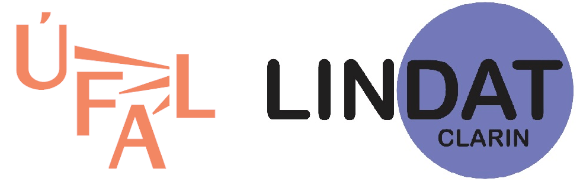

|  | Prague Dependency Treebank of Spoken Czech 2.0 (PDTSC 2.0) |
Licence

This work is licensed under the Creative Commons Attribution-NonCommercial-ShareAlike 4.0 International Licence.
© 1996-2020 Institute of Formal and Applied Linguistics, Charles University.
How to cite the Prague Dependency Treebank of Spoken Czech 2.0 (PDTSC 2.0):
If you use the data in your research or need to cite it for any reason, please cite:
For LREC papers (separate language resources references):
@languageresource{lrPDTSC20,
title={Prague Dependency Treebank of Spoken Czech 2.0 (PDTSC 2.0)},
author={Mikulov\'{a}, Marie and B\'{e}mov\'{a}, Alevtina and Haji\v{c} Jan and Haji\v{c}ov\'{a}, Eva and Ircing, Pavel
and Kol\'{a}\v{r}ov\'{a}, Veronika and Lopatkov\'{a}, Mark\'{e}ta and Mare\v{c}ek, David and M\'{\i}rovský, Ji\v{r}\'{\i}
and Nedoluzhko, Anna and Pajas, Petr and Panevov\'{a}, Jarmila and Peterek, Nino and Rompoltl, Jan and Sgall, Petr
and {\v{S}}ev\v{c}\'{\i}kov\'{a}, Magda and {\v{S}}t\v{e}p\'{a}nek, Jan and Ure\v{s}ov\'{a}, Zde\v{n}ka
and {\v{Z}}abokrtsk\'{y}, Zden\v{e}k},
url = {http://hdl.handle.net/11234/1-3189},
publisher={Institute of Formal and Applied Linguistics, LINDAT/CLARIN, Charles University},
address={Prague, Czech Republic},
lindat={http://hdl.handle.net/11234/1-3189},
year={2017} }
For general papers and citations:
@misc{pdtsc20,
title={Prague Dependency Treebank of Spoken Czech 2.0 (PDTSC 2.0)},
author={Mikulov\'{a}, Marie and B\'{e}mov\'{a}, Alevtina and Haji\v{c} Jan and Haji\v{c}ov\'{a}, Eva and Ircing, Pavel
and Kol\'{a}\v{r}ov\'{a}, Veronika and Lopatkov\'{a}, Mark\'{e}ta and Mare\v{c}ek, David and M\'{\i}rovský, Ji\v{r}\'{\i}
and Nedoluzhko, Anna and Pajas, Petr and Panevov\'{a}, Jarmila and Peterek, Nino and Rompoltl, Jan and Sgall, Petr
and {\v{S}}ev\v{c}\'{\i}kov\'{a}, Magda and {\v{S}}t\v{e}p\'{a}nek, Jan and Ure\v{s}ov\'{a}, Zde\v{n}ka
and {\v{Z}}abokrtsk\'{y}, Zden\v{e}k},
url = {http://hdl.handle.net/11234/1-3189},
note = {{LINDAT}/{CLARIN} digital library at the Institute of Formal and Applied Linguistics ({{\\'U}FAL}),
Faculty of Mathematics and Physics, Charles University},
copyright={Creative Commons - Attribution-{NonCommercial}-{ShareAlike} 4.0 International ({CC} {BY}-{NC}-{SA} 4.0)},
year={2017} }
For "plaintext" reference:
(Mikulová et al., 2017)
Marie Mikulová, Alevtina Bémová, Jan Hajič, Eva Hajičová, Pavel Ircing, Veronika Kolářová, Markéta Lopatková, David Mareček, Jiří Mírovský, Anna Nedoluzhko, Petr Pajas, Jarmila Panevová, Nino Peterek, Jan Romportl, Petr Sgall, Magda Ševčíková, Jan Štěpánek, Zdeňka Urešová, Zdeněk Žabokrtský: Prague Dependency Treebank of Spoken Czech 2.0 (PDTSC 2.0). Data/software, LINDAT-CLARIAH, URL: http://hdl.handle.net/11234/1-3189, 2017.
For footnote references, the following is sufficient in LaTeX papers:
\url{http://hdl.handle.net/11234/1-3189}